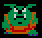
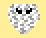
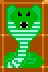
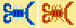
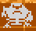

![[Troll Bridge]](title.gif)
Friends
|
|
|  Merchants provide supplies to the hunters and adventurers who travel to this region. They are generally a rough and rude lot but the shops can provide useful tools for a price. |
|  Air Elementals are powerful spirits of wind. Projectiles are blown away by the powerful winds that make up their bodies. Even direct attacks by a sword or axe are ineffective without an enchanted edge. |
| The Cimex is a small bug found throughout the world. They scurry around without organization or reason. They have a variety of coloring but none are more dangerous than the others. |
|  The Giant Cobra was once used as guards by the cult of the snake. The immense serpent has the ability to spit magical fire. Very few of these beasts remain today as the cult of snake is no longer as strong as they once were. |
|
|
|  Scorzions are large two-tailed scorpions that live in the desert to the west. The red scorzion is slightly faster. |
|  Skeletal Trolls are the animated skeletons of dead trolls. These undead creatures are basically mindless but they will attempt to attack nearby trolls. |